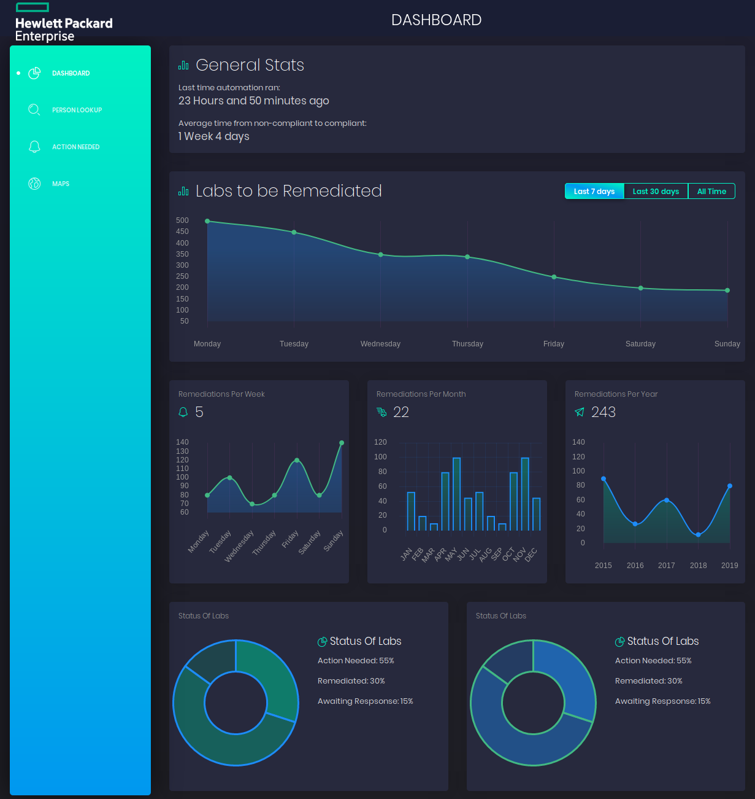
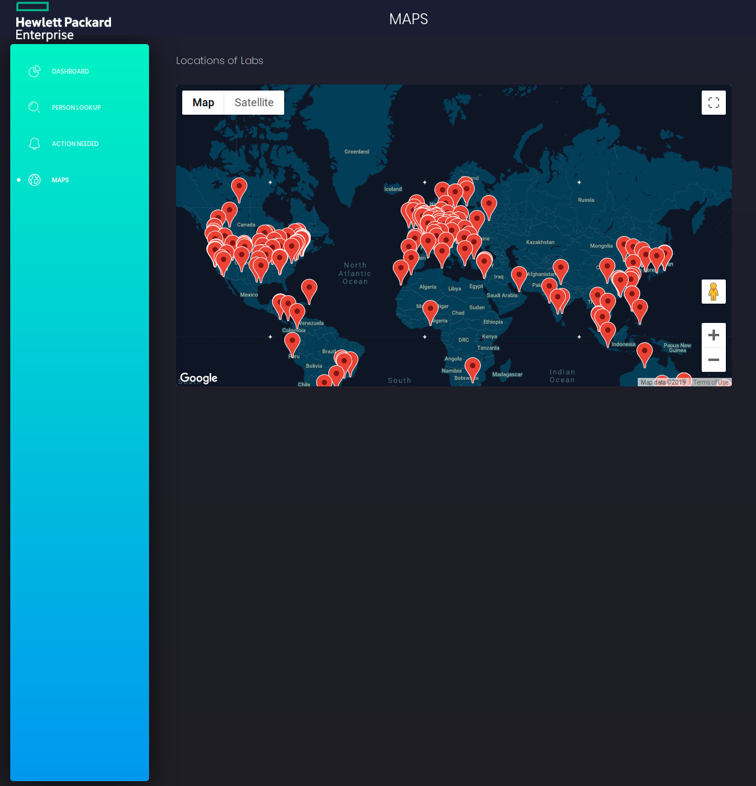
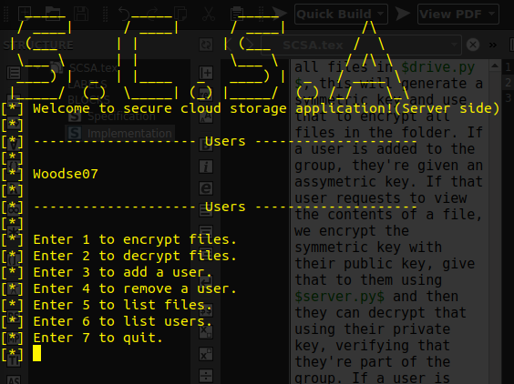
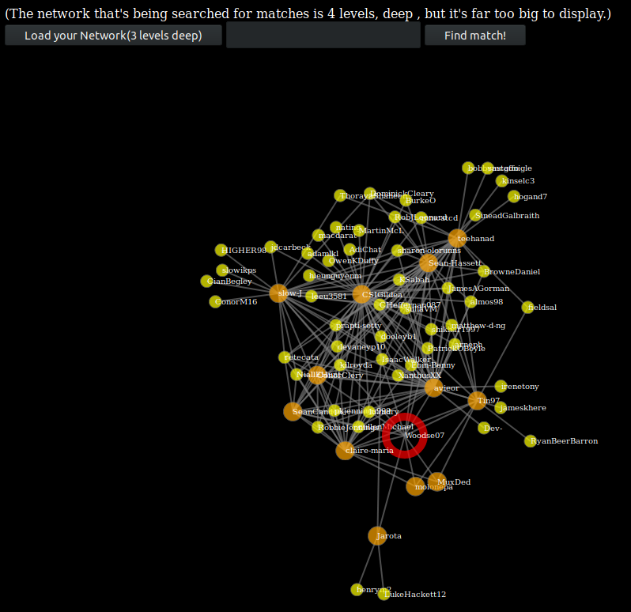
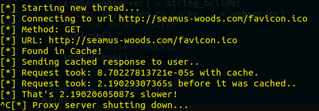
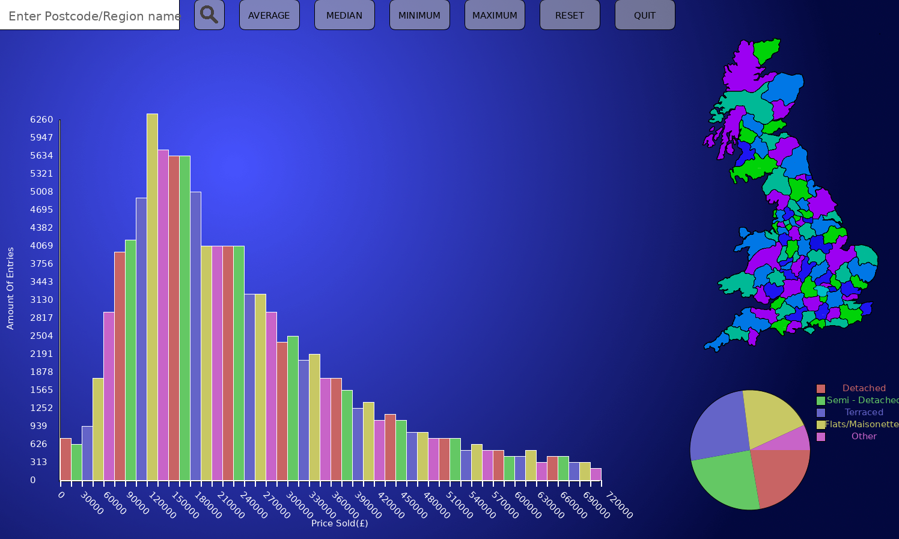

|


Name: |
Age: |
Email: |
Course: |
Education: |
Bio:
Grew up in Dundalk, Co. Louth, Keen interests in all areas of Computer Science. Pursuing a Masters.
Please check out my portfolio! Links to my Github and LinkedIn can be found on the home page or on my CV.
Below are only a few projects that I've found interesting since starting college. If you would like to see the rest of my work please visit my Github page here.
Lab Remediation Automation
 
Description:
Lab Remediation Automation was a project I worked on during my internship with Hewlett Packard Enterprise. Was given a collection of Python scripts which would run periodically to produce a list of labs within the company that weren't compliant, and details on the people who owned those labs (contact details, steps away from the CEO.) Was tasked with improving the scripts and creating a frontend to display metrics from the scripts as well as some functionality to email the managers of the owners of these labs through the frontend.
Originally these scripts took over 8 hours to run start to finish, I managed to optimise them to run in less than 5 minutes. Created a frontend using Vue.js and Flask to display some metrics, look up details of anyone in the company, send emails regarding non compliant labs, and a map of the physical location of all non compliant labs.
Please refer to my CV for more details on this Project.
Genomics Labelling Tool

Description:
The Genmomics Labelling Tool is a project I working on during my internship with Optum, UnitedHealth Group, which is based on the Human Phenotype Ontology, which is a standardised vocabulary of phenotypic abnormalities encountered in human disease. The HPO contains over 13,000 terms.
Using Angular and D3.js as our main technologies, we built a web application to make it easier to navigate the ontology for general practitioners. We did this by creating an interactive force directed graph which could be used to select the most accurate term to describe a patient. We paired this with a neo4j database of patients created by intern team based in US, and a machine learning model to recommend HPO terms based on a patients ICD codes.
The final result was a web application that a general practitioner could use to load in a patient, receive recommendation for HPO codes for that patient, add their own HPO codes using the force directed graph, and the ability to save the patient back into the database.
Please refer to my CV for more details on this Project.
Secure Cloud Storage Application

Description:
Created a secure cloud storage application for Google Drive in Python. The application will secure all files that are uploaded to the cloud, such that only people that are part of my 'secure cloud storage group' will be able to decrypt my files, to all other users these files will be encrypted.
The application allows you to encrypt or decrypt files in the drive, add or remove users from your secure cloud storage group, list all the files in th drive or list all the users in your group.
Please visit the project page for more details: Here
Github Degrees of Separation

Description:
Interesting project using the Github API and the idea of the six degrees of separation (Info here).
Created a network of all of my followers, their followers, their followers followers, and so on. Could then enter a username into the app and it would return a graph of the least amount of connections between you and that person through your followers. Would love to come back to this at some stage and do some more work on it.
Libraries used:
NetworkX, Flask
Please visit the project page for more details: Here
Proxy in Python

Description:
Created a web proxy with Python that can respond to HTTP & HTTPS requests, handle websocket connections, dynamically block URLs via a management console, efficiently cache requests locally thus saving bandwidth and can handle multiple requests simultaneously by implementing a threaded server.
Libraries used:
thread, socket
Please visit the project page for more details: Here
Matrix Convolution in Arm Assembly
Description:
First year assignment that I found interesting. Created an Arm Assembly program to do some image manipulation. Among this was manipulating brightness and contrast, adding a blur effect. The final part was a bonus effect.
For my bonus effect I decided to try some matrix convolution. It was really cool to understand how it works and how you can perform edge detection, emboss, sharpening manipulation to images.
Please visit the project page for more details: Here
UK Land Registry Project
